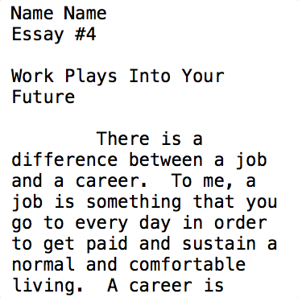
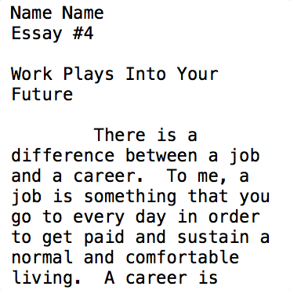

Portfolio ML and AI
Fingerprint Verification
CNN
Convolutional Neural Network's recent success in image recognition led our team to believe we could effectively implement a network for fingerprint verification. Using two images as input, we applied convolutions with max pooling and activation functions intermittently. We then created a fully connected layer and applied a softmax function to reduce the complex features into a class. The class label was verified or rejected to train the network effectively.

Predicting Movie Ratings
Sentiment Analysis
The intent of this natural language processing problem is to predict the ratings of a movie-goer based on his/her review. In order to yield the most accurate results, I explored combinations of various pre-processing techniques on a training data set. Approaches include lemmatizing, stemming, removing stopwords, observing word frequency and comparing its accuracy to that of inverse document frequency. With the feature matrix engineered, I trained logistic regression classifiers, support vector machines of a linear kernel, and naive bayes classifiers. The model with highest predictive accuracy on the validation set was used to label the test set.

Mona Lisa
Genetic Algorithm
Genetic Algorithms are famous for their ability to evolve a population of objects into a highly fit version of themselves. This project focused on producing images that highly resembled famous drawings. By selecting, crossing, and mutating best fit images from a population of polygons, I was able to evolve the population to a desired target.
Shipping Yard
Nonlinear Search Planner
Here I planned out a strategy for moving containers from a ship to specific locations in a shipping yard. Due to redundancy in planning, a linear planner is inefficient in determining an optimal solution. I therefore opted to use a nonlinear partial order planner. Initially I began with empty partial plans and then by continuously adding causal links to connect states of the environment, I was able to piece together a complex partial plan. Finally, when all goal conditions have been met the partial plan can be sorted to produce a complete plan.
An Unpredictable World
Markov Decision Process
I directed an agent to a goal state in an unpredictable environment. Due to the environment’s indeterminateness, an optimal policy for the agent was calculated via value iteration. The expected utility for each action at all positions is determined first. The action with the greatest expected utility is assumed to be the optimal action to take and is used to update the policy, utility gained, at that position. To optimize the map's policy for an agent, the process is repeated until convergence. Monte Carlo simulations were then run to field test and verify the model’s acceptability.
The Traveling Salesman
A* Search Algorithm
The classic traveling salesman problem is an NP-hard problem that so far requires a heuristic to find the shortest route to connect a set of points. I used the A* search algorithm because it is admissible (does not overestimate path lengths) and complete (will always find a solution if one exists). Several functions were explored to help efficiently determine the optimal path and due to its sparsity, Kruskal's algorithm was found most useful in estimating the remaining path cost. The objective function produces a mininum spanning tree at each point in time and paths of excessive length are pruned out by the heuristic.
 

Anonymous Authors
Bayesian Inference
Given a library of articles, I trained a bayesian network to attribute an author to an anonymous piece of work. To ignore the bias of the articles content and focus on a writer’s patterns, I used stop word frequency as a measurement over term frequency. Stop word frequency was proven to be a better predictor of authorship with an order of magnitude higher accuracy over that of term frequency.
Logging Database
Runtime & Storage Tradeoffs
Utilizing combinations of data structures, I built an efficient log file database. Taking into account insertions, deletions, and look-up complexities for time and memory, I determined optimal data structures to properly manage and sort the database as needed.
Finite-state Machine
Assembly Level Programming
A finite-state machine was implemented to carry out a computer's assembly instructions. I implemented procedure calls in an assembly language similar to ARM and designed an optimal finite-state machine. Instructions are fetched from memory, decoded and executed until the program reaches a halt.
Pipelined Datapath
Parallel Instruction Clocking Scheme
By implementing a pipelined datapath I reduced the execution time for data processing that a single cycle and multicycle data path would require. To prevent data hazards and control flow hazards, the five stage pipeline was fitted with data forwarding methods and branch predictions. By allowing for the register files and memory writes to be present for the entire cycle, forwarding can be used to update instruction dependencies and prevent them from becoming hazards at all.